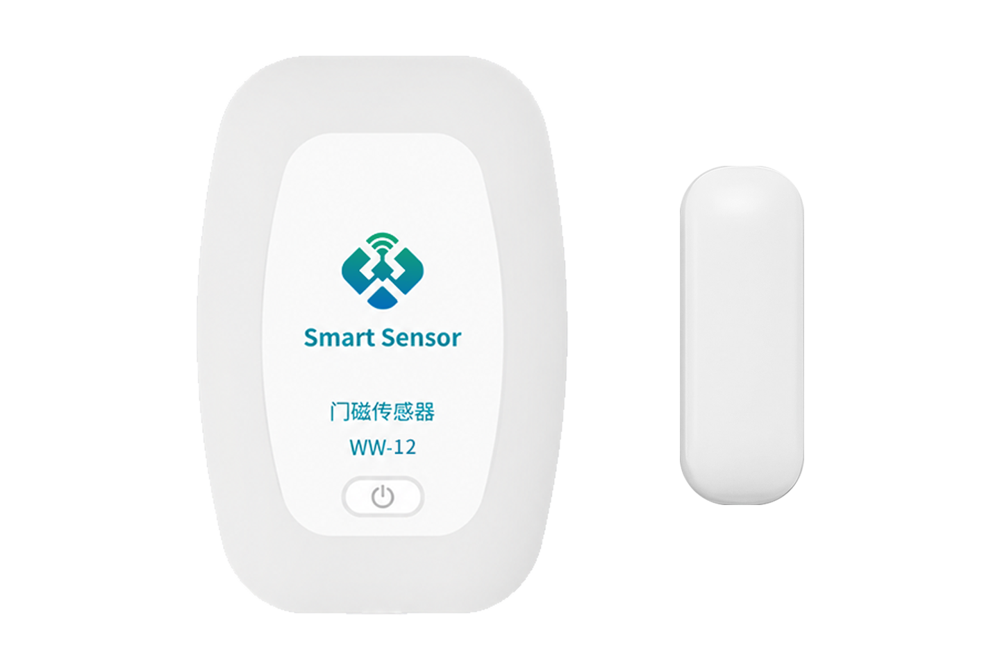
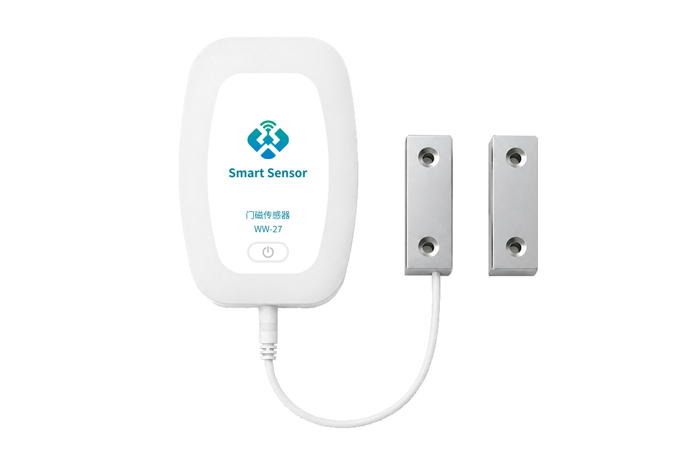

WW-27 系列无线门磁检测终端
支持 LoRa、LoRaWAN、4G 无线通信的门磁开关量采集终端，兼容环境温湿度采集与远程监控。
地址：南京市浦口高新区星火路 20 号 | 邮箱：x@wwiot.com | 电话：136 7512 0926 | 网址：www.wwiot.com
1产品概述
WW-27 是万维物联门磁检测系列产品之一，支持 LoRa、LoRaWAN、4G 无线数据远传，实现门磁开关量信号的远程采集和监控。数据可上传至万维公有云平台，并通过 Web、App、小程序实时查看，支持电话、短信、微信告警通知；同时支持 TCP、UDP、MQTT、Modbus-RTU、Modbus-TCP 等协议对接客户平台。
产品订货型号
| 产品名称 | 订货型号 | 备注 |
|---|---|---|
| LoRa 无线门磁采集终端 | WW-27L | LoRa，433~510 MHz |
| LoRa 无线门磁采集终端 | WW-27LW | 低频 LoRaWAN，433~510 MHz |
| LoRa 无线门磁采集终端 | WW-27HW | 高频 LoRaWAN，863~928 MHz |
| 4G 无线门磁采集终端 | WW-27C | 4G 版本 |
| LoRa 无线门磁采集终端（带线） | WW-27L/LW/HW-SP22 | 门磁探头带 0.3m 引线 |
| 4G 无线门磁采集终端（带线） | WW-27C-SP22 | 门磁探头带 0.3m 引线 |
2功能特点
4G 版本
支持全网通、外插卡及 TCP/UDP/MQTT 标准通信协议，可无缝对接万维云平台或客户私有平台。
LoRa 版本
支持万维私有 LoRa 和通用 LoRaWAN，功耗低、性能稳定、传输距离远；配套万维 LoRa 网关，可通过 TCP/UDP/MQTT/Modbus-RTU/Modbus-TCP 对接云平台。
3结构尺寸和产品展示

WW-27 标准款产品外观

WW-27-SP22 带线款产品外观
主机尺寸：长 67mm × 宽 24.5mm × 高 18mm。标准款门磁探头无引线，SP22 带线款引线长度约 0.3m。
4应用场景和方案流程
WW-27 门磁检测系列适用于安防、智能家居、商业、工业与仓储、交通运输等场景，可通过磁铁靠近和远离输出开门、关门状态。
安防门窗监控智能家居联动仓库与机房商业场所工业设备交通运输
LoRa 方案
门磁终端→ LoRa →LoRa 网关→ 网络 →万维云平台
或客户私有云
适合检测点多且分布相对集中的区域，具有低功耗、远距离、抗干扰和免布线的特点；本地组网方式适合对数据安全要求较高的场景。
4G 方案
门磁终端→ 4G 网络 →万维云平台
或客户私有云
适合 4G 信号良好、需要即装即用且无需部署网关的场景。
5产品规格
| 参数 | WW-27L/LW/HW | WW-27C | WW-27L/LW/HW-SP22 | WW-27C-SP22 |
|---|---|---|---|---|
| 探头类型 | 外置不带线 | 同左 | 外置带线 | 同左 |
| 通信方式 | LoRa | 4G | LoRa | 4G |
| 是否支持外插卡 | 否 | 是 | 否 | 是 |
| 通信协议 | LoRa / LoRaWAN | TCP / UDP / MQTT | LoRa / LoRaWAN | TCP / UDP / MQTT |
| 供电 | 2 节 ER14505，5400mAh | |||
| 电池寿命 | 3 年（10min 上报，SF9，@25℃） | 2 年（1h 上报，@25℃） | 3 年（10min 上报，SF9，@25℃） | 2 年（1h 上报，@25℃） |
| 待机电流 | 20μA | |||
| 检测类型 | 磁铁靠近和远离 | |||
| 检测范围 | 感应距离 20~45mm | |||
| 响应方式 | 触发式响应 | |||
| 引线长度 | 无 | 无 | 0.3m | 0.3m |
| 天线 | 内置 LoRa 天线 | 内置 4G 天线 | 内置 LoRa 天线 | 内置 4G 天线 |
| 主机尺寸 | 长 67mm × 宽 24.5mm × 高 18mm | |||
| 安装方式 | 3M 胶或安装支架固定 | |||
| 工作环境 | 温度 -40℃~+85℃；相对湿度 ≤95%RH（无凝结） | |||
| 防护等级 | IP54 | |||
| 颜色 / 材质 | 白色 / PVC | |||
6产品安装和配置
3M 胶固定
- 擦拭墙面、柜体或设备外壁，清除灰尘、油污和水汽，保持基面干燥平整。
- 撕掉 3M 胶离型纸，对齐安装位置。
- 用力按压传感器底部 30 秒以上，使胶层充分贴合。
- 静置 2~4 小时后再触碰拉扯，24 小时达到最大粘接强度。
支架固定
使用独立平板型安装支架，支架预留标准螺丝孔；将传感器壳体与支架锁紧后，可固定在墙体、导轨或立柱上。安装时应使磁铁与门磁探头保持平行，并在 20~45mm 感应范围内调整位置。
配置方法
设备支持蓝牙和远程配置。蓝牙配置时按产品配套操作流程使设备进入配置状态；远程配置时通过云平台或网关下发指令修改参数。首次部署前请确认型号、设备编号、通信频段、网络参数和上报周期。
主要配置项
| 参数 | 说明 | 参考默认值 |
|---|---|---|
| 上报周期 | 定时采集并上报数据的间隔，单位为秒 | 600 秒（10 分钟） |
| 检测周期 | 设备主动唤醒并读取门磁状态的间隔；周期越小，响应越灵敏但功耗越高 | 60 秒 |
| 变化量 | 用于判断是否触发变化量上报；设置为 0 时不进行变化量上报 | 按项目配置 |
7数据报文格式
7.1 非 LoRaWAN 模式
完整数据帧由协议头、设备地址、控制字、包序号、传感器数据和 CRC 组成：
7.2 LoRaWAN 模式
为节省传输字节，LoRaWAN 模式仅上传传感器数据内容：
7.3 基础数据类型
| Type | Value | 说明 |
|---|---|---|
| 0xFF | 2 字节 | 通用应答：第 1 字节为被应答命令，第 2 字节为结果 |
| 0x00 | 2 字节 | 设备信息：Version、Voltage Level 及保留位 |
| 0x09 | 1 字节 | 开关量状态；一般一个 bit 代表一路门磁，最多支持 8 路 |
7.4 门磁数据（0x09）
门磁状态值为 1 字节无符号整型，通常 1 代表开门，0 代表关门。设备默认上报设备信息（0x00）和开关量（0x09）等数据类型。
7.5 配置查询和下行指令
| 指令 | Value | 说明 |
|---|---|---|
| Read（0x01） | 0x81 | 读取用户配置，返回内容参考上行格式 |
| Write（0x02） | 0x11 + uint16_t | 修改上报周期，单位秒 |
| Write（0x02） | 0x12 + uint16_t | 修改检测周期，单位秒 |
8性能测试
LoRa 接收灵敏度
| 扩频因子 SF | 接收灵敏度（dBm，BW=125K，470MHz） |
|---|---|
| SF7 | -126 |
| SF8 | -129 |
| SF9 | -131 |
| SF10 | -134 |
| SF11 | -136 |
| SF12 | -139 |
LoRa 版本最大发射功率：+22dBm。
9文档版本
| 修订日期 | 版本 | 发布说明 |
|---|---|---|
| 2026.02 | V1.0 | 初稿发布 |
技术支持：万维物联网（南京）有限公司。联系技术支持时，请提供设备型号、设备编号、版本、现场安装信息及故障现象。